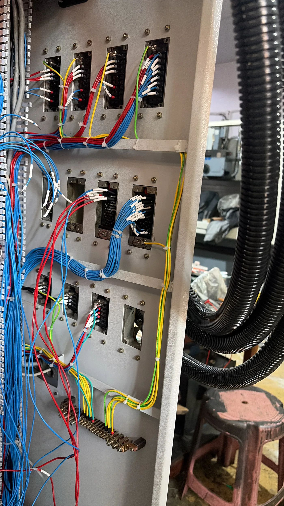
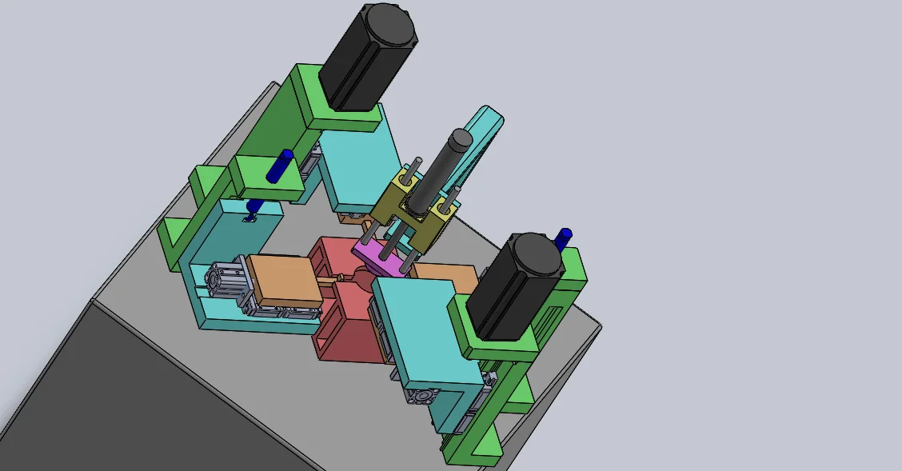
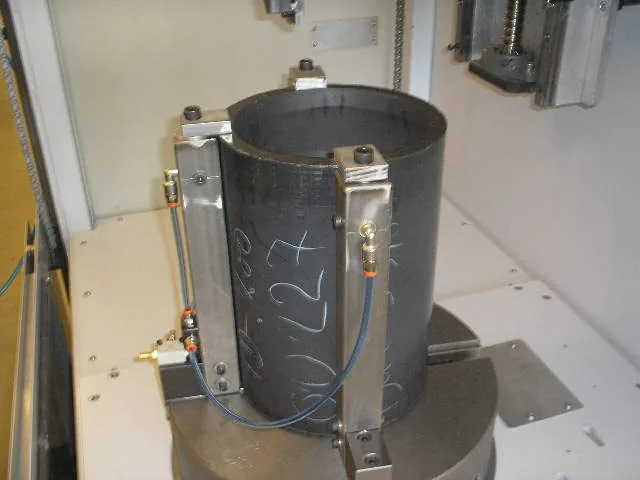

ENGINEERING FIELD MANUAL. This concept treats the website like a beautifully designed technical publication: chapters, drawings, project registers, annotations and requirement sheets instead of a conventional corporate homepage.
OPEN THE MANUAL → VSK ELECTRO-MECH SOLUTIONS · SPECIAL PURPOSE MACHINES · RETROFIT · PRECISION MANUFACTURING 
VIEW / RETROFIT-01 PHOTO / VSK ARCHIVE SUBJECT MACHINE-TOOL ENGINEERING
DELIVERED 300+ MACHINES
SPM 40+ VARIANTS
01 / CONTENTS
CAPABILITY CHAPTERS,NOT SERVICE CARDS.
01.01 Special Purpose Machines Application study → architecture → actuation → controls → trials → commissioning.
+ 
BUILD / PURPOSE-BUILT EQUIPMENT Machine architecture starts with the production operation. Turning, boring, cutting, notching and drilling Testing, greasing, spraying and finishing systems Conveyors, loading, gantry and handling interfaces 01.02 Machine Reconditioning & Retrofit Mechanical restoration + electrical rebuilding + controls modernization.
+ REVIVE / MACHINE SECOND LIFE Preserve valuable machine iron and modernize the capability. Grinding, turning, machining-centre and specialty platforms CNC / PLC / HMI / servo / drive modernization Panel, wiring and recommissioning scope 01.03 Precision Component Manufacturing Turning, machining and grinding knowledge applied to repeatable component production.
+ 
MAKE / COMPONENT + PROCESS Machine-builder thinking applied to the component itself. Manufacturing to drawing Fixtures, interfaces and workholding support Process and manufacturability support 01.04 Controls, Motion & Electrification CNC, PLC, HMI, servo, VFD, control panels and machine wiring.
+ CONTROL / MOTION / ELECTRICAL Hardware and sequence are treated as part of the machine architecture. Fanuc, Siemens, Mitsubishi and Delta environments Servo / VFD motion integration Panel design, wiring and machine electrification 02 / SYSTEM DRAWING
CLICK THE DRAWING.READ THE ENGINEERING SYSTEM. MECH FLUID CTRL MAKE PROVE VSK ENGINEERING MACHINE DESIGN Mechanical architecture Structure, workholding, spindle interface and machine layout around the production operation.
CORE PILLARS BUILD / REVIVE / MAKE
FIELD REACH INDIA
MACHINE RECORD 300+
SPM RANGE 40+
03 / PROJECT REGISTER
MOVE THROUGH THE INDEX.THE IMAGE APPEARS IN THE MARGIN.
P-001 4-Servo Seal Slotting Multi-servo SPM / seal-processing application
BUILD P-002 Air Leak Testing Inspection equipment / fixture architecture
TEST P-003 Rod Boring CNC boring / PTFE processing reference
CNC P-004 Z-Cut Machine 0.02 mm application-tolerance reference
PRECISION P-005 U-Drill Machine Dedicated drilling equipment
SPM P-006 Vertical Turning CNC Application-led turning machine
CNC P-007 Jig Grinding Retrofit Machine reconditioning / controls modernization
REVIVE P-008 Kellenberg OD Grinding Machine second-life reference
REVIVE 04 / ACCEPTANCE REFERENCES
MEASURABLE PROOF,DRAWN LIKE A TITLE BLOCK. ALIGNMENT / REF-20M 20 µm Face-out alignment reference on a 1000 mm grinding-wheel unit.
TOLERANCE / REF-Z02 0.02 mm Recorded Z-cut / punching-machine tolerance reference.
CYCLE / REF-12S 12 sec Metal-seal finishing cycle reference on the facing-machine project.
05 / CUSTOMER NOTES
GOOGLE SIGNAL,ANNOTATED IN THE MARGIN. LIVE LISTING SNAPSHOT 4.9 14 Google reviews
“Good service company” “Special purpose machines effective price” “Custom built machines, CNC retrofit solution services provider.”